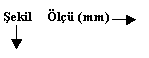

Turgay
AVCI, Sultanahmet Endüstri Meslek Lisesi Model Bölümü
Öðretmeni
a-
Ýmalat (Konstrüksiyon) resmi en iyi biçimde okunarak modelin
hatasýz yapýlmasý saðlanmalýdýr. Döküm parçasýnýn ölçü tamlýðý
ve saðlýklý kalýplanabilmesi modelin ölçü tamlýðýna ve teknolojik
kurallara göre yapýlmasýna baðlýdýr.
b- Modelci ekonomik kalýplama metodunu bulmak ve buna göre
çalýþmak zorundadýr.Modeli basit ve kýsa zamanda yapacak þekilde
tasarlamalýdýr.
c- Modeli elde veya makinede kalýplayacak eleman kalifiye
olmasa bile hatasýz kalýplayabileceði bir þekilde düzenlenmelidir.
d- Kalýp düzenlenmesi öyle olmalýdýr' ki ergimiþ maden yapýlmýþ
kalýp içine kolaylýkla aksýn ve hatasýz katýlaþsýn.
e- Dökümden sonra kalýp içerisinde hava boþluðu ve curuf kalmayacak
þekilde dizayn edilmelidir.
1- Mala yüzeyi seçimi:
Mala yüzeyi:Kalýbýn ayrýlma yüzeyine mala yüzeyi denir. Mala
yüzeyi kalýbýn açýlarak modelin kalýbýn içerisinden çýkmasýný
temin eder. Mala yüzeyinin modelin hatasýz kalýplanmasýný
temin edecek yüzeyden veya yüzeylerden seçilmesine dikkat
edilmelidir. Ayrýca mala yüzeyi seçiminde parçanýn þekli kalýplama
tekniði ile kalýplama sayýsýnýn' da önemi büyüktür.
2-
Kalýplama sayýsý:
Az sayýda kalýplanacak modeller genellikle ahþap malzemelerden
ve el iþçiliði ile kalýplanacak tarzda yapýlýr. Model en hatasýz
ve en ekonomik kalýplamayý saðlayacak tarzda mala yüzeyi seçilir
ve gerekiyorsa model mala yüzeyinden parçalý yapýlýr.
Çok sayýda kalýplanacak modeller (seri üretim modelleri) genellikle
plakaya bir veya birden fazla model baðlanarak elde veya kalýplama
makinelerinde kalýplanýrlar. Bu modeller genellikle metal
veya polimer malzemelerden yapýlýrlar, plakalarý ise kontrplak,
alüminyum veya dökme demirden yapýlýrlar.
3-Kalýplanma
þekli: Modeller yapýlýrken kalýplama yapacak dökümhanenin
teknik imkanlarý ve kalýplanma teknolojisi göz önünde bulundurulmalýdýr.
a- Elde kalýplama: Modellerin metal veya yine modelcinin yaptýðý
derecelerle kum ile kalýplanma iþlemidir. Genellikle kupol
veya indiksiyon ocaklarýnda ergitilen maden kum kalýplara
dökülür.
b-Makinede kalýplama: Plakalara baðlanmýþ seri üretim modellerinin
standart derecelerle normal basýnçlý kalýplama makineleri
ile kalýplanmasý iþlemidir. Bu iþlem yüksek basýnçlý kalýplama
makineleri ile daha seri ve hatasýz olarak yapýlýr.
Dizamatik sistemle çalýþan dökümhanelerde kalýplanma iþlemi
son derece hýzlý ve hatasýz olur.
B- Model ilaveleri:
1- Eðim: Modelin kalýplandýktan sonra kalýbý bozmadan kalýbýn
içerisinden çýkarýlabilmesi için mala yüzeyine dik olan yüzeylere
verilen açýdýr.bu açý tek yüzeylere verildiðinde eðim karþýlýklý
(silindirik) yüzeylere verildiðinde koniklik adini alýr.
Modele üç türlü eðim verilebilir bunlar:
1-Artý Eðim: Eðim açýsý veya % miktarý modelin üzerine fazlalýk
olarak verilir.
2- Eksi eðim:Açýsý veya % miktarý model ölçüsünden eksilterek
verilir.
3- Ortalama eðim: Model yüzeyine yüksekliðin yarýsýnda ilave
yarýsýndan sonra eksilterek verilir.
Eðim
ve koniklikler DIN e göre standart olup tabloda gösterilmiþtir
Model
eðimleri:
|
YÜKSEKLÝK
(mm)
|
EÐÝM
(Derece)
|
YÜKSEKLÝK
(mm)
|
EÐÝM
(mm)
|
|
10'a kadar
|
3
|
250'ye kadar
|
1,5
|
|
15'e kadar
|
2
|
320'ye kadar
|
2
|
|
30'a kadar
|
1.30
|
500'e kadar
|
3
|
|
50'ye kadar
|
1
|
800'e kadar
|
4,5
|
|
80'e kadar
|
0.45
|
1200'e kadar
|
7
|
|
180'e kadar
|
0.30
|
2000'e kadar
|
11
|
| |
|
4000'e kadar
|
21
|
Eðimlerin
yarar ve zararlarý: Modele verilen aþýrý eðim parçanýn resme
göre þeklini bozar ayrýca parçanýn yerinde çalýþmasýna engel
olabileceði düþünülmelidir. Modele az verilen eðim ise modelim
kumdan çýkmasýný güçlendireceðinden dolayý fazla takalamaya
ihtiyaç gösterir bu aþýrý takalama ölçü deðiþikliðine yol
açar.
Çekme: Kalýba yüksek ýsýda dökülen maden soðuma esnasýnda
hacimce küçülmeye maruz kalýr buna çekme denir.
Çekmeyi ölçülerde meydana gelen küçülme ve kütlede meydana
gelen küçülme olmak üzere ikiye ayýrabiliriz. Her malzemenin
çekme oraný farklýdýr bu oran % olarak 100 mm de .....mm cinsinden
ilave edilir. Örneðin dökme demir %1 çeker dolayýsýyla modeli
yaparken ölçüleri %1 büyük yapmamýz gerekir.
Bazý
metallerin çekme miktarlarý:
|
DÖKÜM
GERECÝ
|
ÇEKME (%)
|
OLABÝLECEK SAPMA DEÐERÝ
|
|
Dökme
demirler:
Lamel grafitli
Küresel grafitli Tavlanmamýþ
Küresel grafitli tavlanmýþ
|
1.0
1.2
0.5
|
0.5...0.3
0.8...2
0.0...0.8
|
Çelik döküm
Sert mangan çeliði |
2.0
2.3 |
1.5...25
2.3...2.8 |
|
Temper döküm:
Beyaz temper döküm (GTW)
Siyah temper döküm (GTS)
|
1.6
0.5
|
1.0...2
0.0...15
|
| Alüminyum döküm alaþýmlarý |
1.2 |
1.0...1.5 |
| Magnezyum döküm alaþýmlarý |
1.2 |
1.0...1.5 |
Bakýr dökümler (Eloktrolit)
Bakýr kalay alaþýmý (Bronz)
Bakýr Çinko alaþýmý (Pirinç)
Bakýr çinko kalay alaþýmý (Kýzýl döküm) |
1.9
1.5
1.2
1.3 |
1.5...2.1
0.8...2.0
0.8...1.8
0.8...1.6 |
| Özel Pirinç Döküm (Cu-Zn-Mn-Fe-Al) |
2.0 |
1.8...2.3 |
Çok gereçli alüminyum bronzu
Çinko döküm alaþýmlarý |
2.1
1.3 |
1.9...2.3
1.1...1.5 |
| Beyaz metal (kurþun-kalay) |
0.5 |
0.4...0.6 |
Çekmeye
etki eden faktörler:
a) Parçanýn þekli: Ýnce ve düz parçalar en büyük deðerde çekmelerle
karþý karþýyadýr, girintili çýkýntýlý ve karýþýk þekilli parçalarda
çekme daha az olur.
b) Parçanýn kalýnlýklarý: Kalýn bir parçadaki çekme ince parçaya
göre daha az olur; fakat iç boþluklar veya ince kesitlerde
çatlamalar görülebilir. Bunlar besleyici koymak veya model
konstrüksüyonunda kesit düzenlemeleri ile ortadan kaldýrýlabilir.
c) Kalýbýn þekli: Maçalý kalýplarda çekme daha az oranda görülebilir.
3-Yolluk ve besleyiciler: Potanýn aðzýndan dökülen ergiyik
madenin kalýp boþluðuna dolmasýný saðlayan yola yolluk denir.
Yolluk sistemi beþ parçadan meydana gelir.
1-Dik yolluk: Potadan dökülen madenin sakin olarak curufluk
ve memelere akýtýlmasý için kullanýlýr.
2- Diplik: Madenin kalýp dibinden kum koparmasýný ve turbulansý
önlemek amacýyla kullanýlýr.
3- Memeler: Madenin kalýba veya besleyiciye aktarýlmasýný
saðlar.
4- Curufluk: Madenin curuflarýnýn tutulduðu boþluklara curufluk
denir.
5- Besleyici:Kalýptaki kalýn kesitleri önlemek amacýyla kullanýlýr.
Yolluk sisteminin özellikleri:
1- Sistem maden ile gelen ve madenin daðýlýmý sýrasýnda ortaya
çýkan curuf, tortu, kalýp kumu vs. tutacak ve kalýba bunlardan
arýnmýþ temiz madenin girmesini saðlayacak önlemleri içermelidir.
2- Sistem döküm verimini artýrmalý ve sýcaklýk daðýlýmý yaratmalýdýr.
3- Yolluk sistemi kalýplanmasý kolay ve aðýrlýk açýsýndan
ekonomik olmalýdýr.
4- Sývý maden akýþý sakin, sabit debili ve en alt seviyede
türbülanslý olmalýdýr böylece kalýp gazlarýnýn sývý madende
emilmesi, madenin oksitlenmesi ve kalýbýn erozyonu önlenmiþ
olur.
5-Sývý maden kalýp boþluðuna katýlaþmaya baþlamadan dolmalýdýr.
4-Ýþleme Paylarý:
a- Tanýmý:Ýþleme yüzeyi ve iþleme payý imalat resmi üzerinde
belirtilen iþaret o yüzeyin dökümden çýktýðý gibi deðil dökümden
sonra özel bir iþlemeye tabi olacaðýný gösterir. Bu yüzeylere
iþleme yüzeyleri denir.
Ýþleme payý: Ýþlenecek yüzeylere yüzey ölçülerine ve kalitesine
baðlý olarak modele verilen fazlalýða iþleme payý denir.
Dökme
demirler için standart iþleme paylarý:
|

|
300
e
kadar
|
300-600
arasý
|
600-1000
arasý
|
1000-1500
arasý
|
1500-2000
arasý
|
2000-3000
arasý
|
| |
Dýþ
kýsým |
| Silindirik |
|
| |
Ýç
kýsým |
|
2.5
3
|
3
5
|
5
7
|
6
8
|
8
10
|
10
12
|
| |
Üst
kýsým |
| Uzunluk |
Yan Kýsým |
| |
Alt Kýsým |
|
4~5
3~5
2.5~5
|
5~7
6~7
4~5
|
7~10
6~7
5~6
|
10~12
7~9
6~7
|
12~15
9~11
7~9
|
15~20
11~15
9~12
|
Dökme Çelikler standart tesviye paylarý
|
MAX. UZUNLUK
(mm)
|
EN AZ (mm)
|
ORTALAMA (mm)
|
|
Alt kýsým
|
Yan kýsým
|
Üst kýsým
|
Alt kýsým
|
Yan kýsým
|
Üst kýsým
|
|
100 mm.ye kadar
100-200
200-400
400-800
800-1600
1600-3150
3150-6300
|
3
3.5
5
7
9
12
15
|
4
4.5
6
8
11
14
17
|
6
6.5
8
10
13
16
19
|
4
4.5
6
8
11
13
16
|
5
5.5
7
9
12
15
18
|
7
8
10
12
16
20
25
|
Ýþleme
kolaylýklarý: Ýþlemeyi kolaylaþtýrmak için alýnan önlemlerin
amacý:
1- Ýþin tezgaha baðlanmasýný kolaylaþtýrmak
a) iki punta arasýnda tur edecek silindirik parçalarýn eðik
kýsýmlarýna tezgaha baðlanabilmeleri ve punta havþalarý açýlabilmesi
için çýkýntý parçalar eklenir.
b) Üçgen veya küresel biçimli parçalarýn tezgaha baðlanabilmeleri
için ayaklar veya kulaklar eklenmelidir.
2- Bazý iþlemlerin devamýný saðlamak (delme, raybalama ve
diþ açma gibi)
3- Tezgaha baðlanmasý güç ve pahalýya mal olacak iþlerin baðlanmasýný
kolaylaþtýrmak amacýyla iþlenecek yüzeyleri bir araya toplamak.
4- Küçük parçalarýn dökülmesini ve iþlenmesini kolaylaþtýrmak
için sonradan ayýrma iþlemini uygulamak üzere bir araya getirmektir.
Ýþleme
payýna etki eden faktörler:
1- Dökülecek malzemenin cinsi: Dökülecek malzeme dökme demir
veya çelik ise yaþ kalýplara dökümü sonucunda yüzey sert olur.
Yüzeyin sert tabakasýnýn altýndan iþleme yapmak gerekeceðinden
en az 3 mm.iþleme payý vermek gerekir.
2- Ýþlenecek yüzeylerin büyüklüðü: Ýþlenecek yüzeyler el takýmlarý
ile iþlenecekse yüzeylere 2 mm. Ýþleme vermek yeterli olabilir
büyük yüzeyler iþlenecekse bu yüzeyin dökümden sonra deforme
olacaðý dikkate alýnarak 8~12 mm iþleme payý verilebilir.
3- Makine veya elde yapýlmasý: El takýmý ile iþlenecek yüzeylere
iþleme payý az verilir; makinede iþlenecek yüzeylere yüzeyin
iþlenme hassasiyeti göz önüne alýnarak 3 mm. Veya daha fazla
iþleme payý verilebilir.
Döküm
gereç sembolleri:
GG, GGL- TS:DDL (DIN 1691) Lamel grafitli dökme demir: Genellikle
makine gövdelerinin yapýmýnda kullanýlýr, aðýr yük çekme ve
basmaya karþý mukavimdir fakat ani darbelere karþý kýrýlgandýr.
GGG-DDK- TS:DDK (DIN 1693) Küresel grafitli dökme denir: Ani
darbelere karþý mukavimdir, esnektir ve kýrýlganlýk özelliði
azdýr tavlanmýþ ve tavlanmamýþ olarak kullanýlýr.
Dökme çelik: Ergime derecesi 1450 derecedir, modelcilikte
seri kalýplanan maça sandýklarýnýn yapýmýnda, vakum modellerinin
yapýmýnda, kokil döküm kalýplarýnýn yapýmýnda ve kopya modellerinde
kullanýlýr.
Takalama:
Modellerin kum kalýp içerisinden çýkarýlabilmeleri amacýyla
yapýlan iþlemdir. Modele baðlanan takalama demirine takýlan
takalama çubuðuna çeþitli yönlerden vurularak kalýp boþluðu
geniþletilebilir.
-Aþýrý takalama kalýpta ölçü deðiþikliðine yol açacaðý için
tercih edilmez.
Az takalamada ise model sýkýþýk olacaðý için çýkarýlýrken
kum kalýbý kýrabilir ve kalýp bozulabilir.
MAÇALI
MODELLERDE
STANDART ALT ve ÜST MAÇA BAÞI ÖLÇÜLERÝ
|
ÜST MAÇA BAÞI
|
ALT MAÇA BAÞI
|
|
D
|
D2
|
H
|
D
|
D2
|
H
|
|
25
|
22
|
20
|
25
|
24
|
30
|
|
30
|
27
|
25
|
30
|
29
|
35
|
|
35
|
32
|
25
|
35
|
34
|
40
|
|
40
|
37
|
25
|
40
|
39
|
45
|
|
45
|
42
|
30
|
45
|
44
|
50
|
|
50
|
47
|
30
|
50
|
49
|
50
|
|
55
|
52
|
35
|
55
|
54
|
55
|
|
60
|
57
|
35
|
60
|
59
|
60
|
|
65
|
62
|
40
|
65
|
64
|
60
|
|
70
|
67
|
40
|
70
|
69
|
60
|
|
75
|
72
|
40
|
75
|
74
|
60
|
|
80
|
77
|
40
|
80
|
79
|
60
|
|